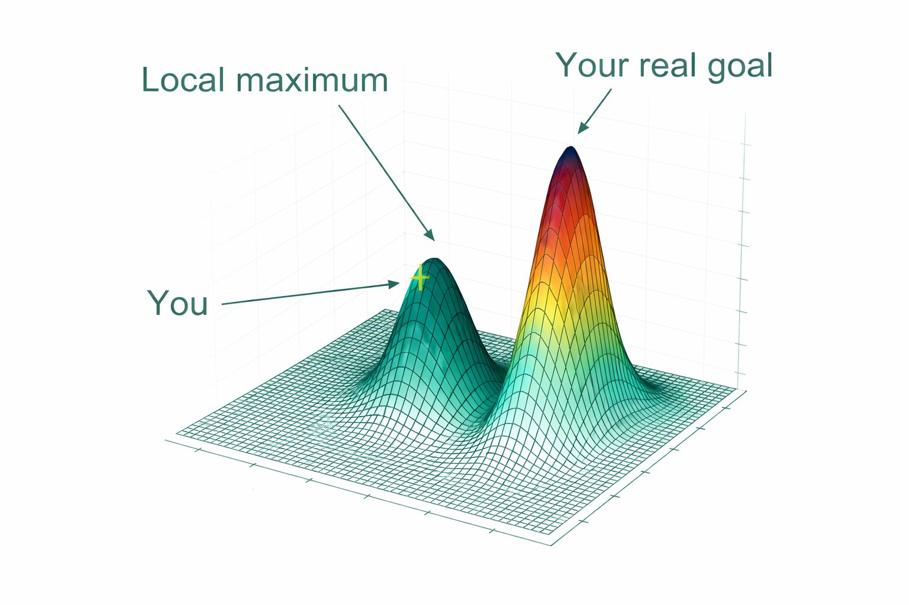

ระบบจะไปได้ไกลเท่าพลังที่เราใส่ ไม่ใช่เท่าศักยภาพที่เราฝันถึง
{kind=link}

บทความสั้นชิ้นนี้ใช้ภาษาของฟิสิกส์มาอธิบายปัญหาเชิงระบบได้อย่างคมมากว่า ธรรมชาติไม่ได้เลือกสิ่งที่ดีที่สุด แต่มันเลือกสิ่งที่ไปถึงได้ ถ้าแรงไม่พอ ระบบก็ไม่มีวันข้ามกำแพงไปสู่สถานะที่ดีกว่าได้
เมื่อนำมามององค์กรและมหาวิทยาลัย ความหมายของมันชัดทันทีว่า การมีศักยภาพอย่างเดียวไม่พอ ถ้าเราไม่สร้างพลัง แรงผลัก หรือเงื่อนไขที่ทำให้ระบบก้าวข้ามข้อจำกัดเดิมไปได้จริง ศักยภาพนั้นก็จะค้างอยู่แค่ในระดับความฝัน
ประโยคที่ว่าเราอาจได้แค่แชมป์ในสนามที่ไม่มีใครสนใจ เป็นการเตือนว่าระบบสามารถประสบความสำเร็จในพื้นที่ที่ไม่สำคัญต่อโลกจริงได้ ถ้าเราไม่ใส่พลังไปยังสนามที่มีความหมายและมีผลกระทบจริง
ศักยภาพไม่ด้อยกว่าใคร แต่ถ้าพลังไม่พอ ก็ไปไม่ถึง
สารหลักของบทความนี้จึงไม่ใช่การปลอบใจเรื่องศักยภาพ แต่เป็นการวิจารณ์ระบบที่ปล่อยให้คนและองค์กรมีศักยภาพสูงโดยไม่ออกแบบพลังขับเคลื่อนให้เพียงพอจะไปถึงสิ่งที่ควรเป็น
นี่ทำให้ข้อความสั้น ๆ นี้เชื่อมกับประเด็นใหญ่ของทั้งชุดความคิดได้ดีมาก: การเปลี่ยนแปลงไม่ได้เกิดเพราะเรารู้ว่าจุดสูงสุดอยู่ตรงไหน แต่เกิดเมื่อเราสร้างแรงและเงื่อนไขให้ระบบข้ามกำแพงไปถึงจุดนั้นได้จริง